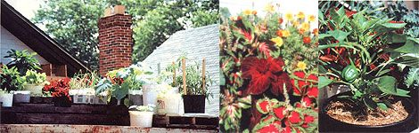

LEFT: Wooden pallets leveled a sloping portion of the roof. The author used everything from peanut butter tubs to Japanese miso kegs for plant containers. MIDDLE: No garden is complete without flowers! RIGHT: Pot grown peppers did especially well.